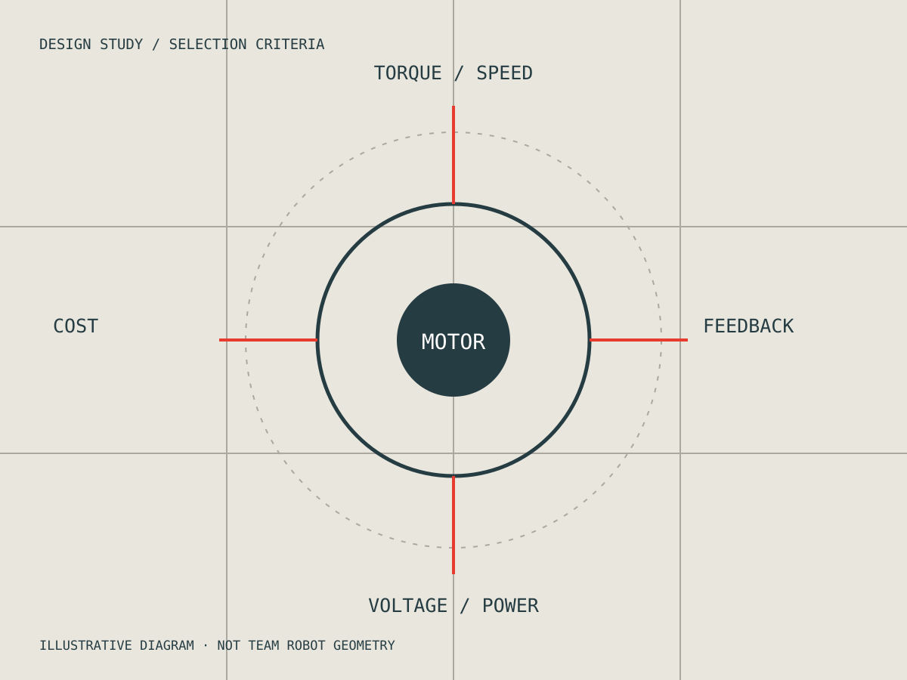

05 / IEEE USF / COMPETITION ROBOTICS
Choosing the right motion.
Mechanical concept development and drivetrain research for the IEEE USF SoutheastCon robotics team.
- MY ROLE
- Student team contributor · motor research & mechanical concepts
- WHEN
- 2026 — Present
- STATUS
- Team development

The challenge
Design and build a robot around competition tasks, rules, and a student-team budget. Drivetrain and mechanism choices have to support what the robot is expected to do.
My contribution
I compare drivetrain and motor options using torque, speed, voltage, encoder feedback, and cost. I also contribute to mechanical concepts and CAD discussions for mechanisms that interact with and collect competition objects.
Design decisions
Motor selection is a system decision: speed and torque must work with the drivetrain, available power, feedback, and budget. My contribution focuses on researching and communicating these tradeoffs to the team.
Evidence & current outcome
This is ongoing team design and build work. No competition placement, measured robot performance, or completed hardware demonstration is claimed here. The diagram is an illustration of the comparison criteria, not a drawing of the team’s robot.
What comes next
Continue component comparisons and mechanical integration as team requirements and mechanisms develop.
More work. More ways to solve a problem.
Explore all projects ↗